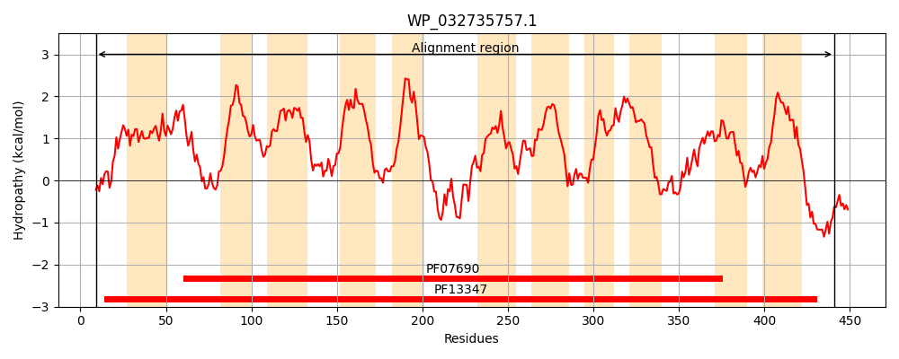
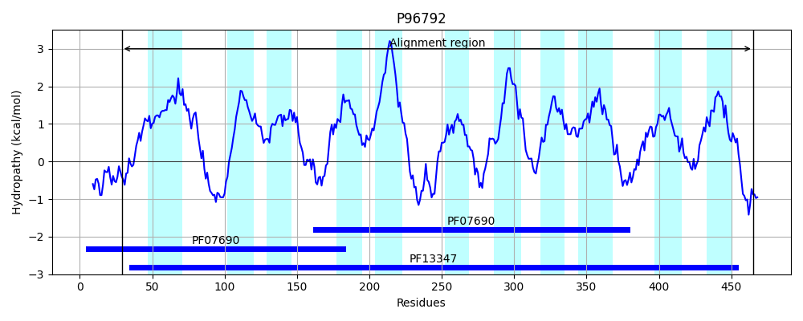
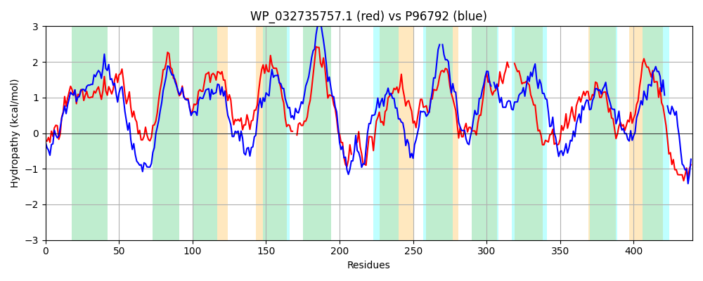

Hit Accession: P96792
Hit TCID: 2.A.2.3.3
Hit Description: gnl|BL_ORD_ID|11756 gnl|TC-DB|P96792|2.A.2.3.3 PUTATIVE XYLOSE-PROTON SYMPORTER (XYLOSE TRANSPORTER) - Lactobacillus pentosus.
Mach Len: 440
e:0.000000
Query TMS Count : 11
Hit TMS Count: 11
TMS-Overlap Score: 9.550000
Predicted Substrates:None
BLAST Alignment:
Score: 766 , Bit scores: 299 bits, E-value: 5.6e-97, Alignment length: 440, Percentage identity: 38
Query: 9 WRQRLGYGIADLSCNLVWQMISLYLMFFYTDVMGLPAYYVGLMFLVTRLVDGVADVLMGLVIDNTATRWGRCRPWLLIGALPFGLLCILAFYVPDFGTTGKLLYAFITYLCLSFLYTLVNIPFCAMLPFLTSDSAERTTLSAVRILLGSLGATIVAVATLPLVGMLGKG--DQQQGFLYTAVIFGVLAAFFLLVSFRNVEEKITLTGER--MTLKRAWISLRANRPWWIFASNIFLMWGAFFFQTGALVYFFHYYVGNTELTAVIAGISTFVPLLGTLTVPLLARRMKKRHVYLVASAVNLLGMGMMMLSGTYALG---LIVGAVILSLGAGQRTAIYFSMQADPVDYGVWKTGINTAGILTSINGFLGKVAMAGAGAITGALLSSGGYIANQAQSDSALLAIKACYLYIPALLILASMLWMGRFYRLDDHYEQIRADLD 441
W +R Y ++D +CNL + ++S YLMFFYTDV G+ A VG +FLV R+VD G++ID+T TRWG+ RP+ L A+PF + +L F VP+ T K+++A++TY+ + LY+ VNIP ++LP LTS+ ER TLS +R +G+LGATI++ LPLV G G G+ A+I V+A + F N +E++ + + +K + +L+ N PW I F+ W ++ VYFF Y + + L + I G+ V LL + P A+R+ KR+ L+ + ++G +++ G+ AL + VG ++ LG G + + M AD VDYG WK G+ GI+TS + F K M GA+TG +LS+GGY+AN AQS AL AI+ Y+++P + S + + FY++D ++ ADL+
Sbjct: 29 WSERFSYSLSDFACNLSFSLVSTYLMFFYTDVFGISAAIVGTLFLVARIVDAFDGPFWGIMIDHTHTRWGKSRPYWLWFAIPFAVFSVLCFTVPNMSTGMKVVWAYVTYIGVDVLYSAVNIPITSILPSLTSNPQERVTLSTIRQFMGTLGATIISTIALPLVAYFGGGSTSSAHGWFMVALIMAVIAMVIFFIVFANTKERVQTVQSKKSIPIKTSLKALKRNWPWVIVIFINFIYWLGMQTRSQVTVYFFKYNMHDATLASFILGLQ-LVALLAVVITPWTAKRIGKRNTMLMGMLLAIVGQ-LILWGGSKALNVPTITVGTIVGYLGTGFVSGLIAVMLADSVDYGEWKNGVRAEGIVTSFSSFSAKFGMGIGGAVTGLILSAGGYVANHAQSAQALNAIEMNYVWVPIVGFGLSAIAL-LFYKVDKIEPKMLADLE 465 | Protein Hydropathy Plots: |
|---|
|  |  |
Pairwise Alignment-Hydropathy Plot:
|
|---|
|  |